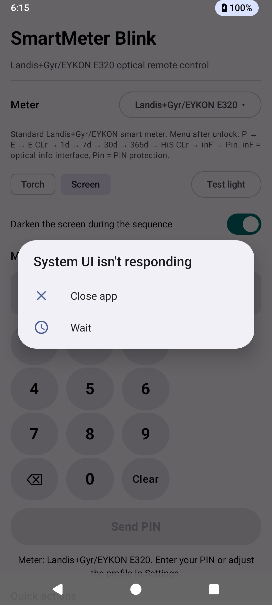

Version 1.0 — App für Android (App-ID de.smartmeter.blink)
SmartMeter Blink verwandelt das Licht Ihres Handys in eine optische Fernbedienung für einen
Landis+Gyr/EYKON E320 (oder ähnlichen) Smart-Meter. Der Zähler besitzt eine optische Schnittstelle
und erkennt Tastendrücke als kurze oder lange Lichteinblendungen. Die App nutzt die
Taschenlampe (Kamera-LED) oder ein weißes Display-Blitzlicht,
um die Zähler-PIN zu übertragen und Einstellungen wie die optische Infoschnittstelle
(inF) und den PIN-Schutz (Pin) umzuschalten – ganz ohne die physischen
Tasten des Zählers zu berühren.
Eine englische Fassung finden Sie unter UsersGuide.pdf.

E, E CLr, 1d, 7d, 30d,
365d oder HiS CLr anzeigt. Lange Impulse sind nur bei
P, inF und Pin sicher. Starten Sie jede Aktion beim
P-Display (Leistungsanzeige).
SmartMeter-Blink.apk auf dem Handy (Datei kopieren oder teilen,
dann öffnen; „Unbekannte Quellen zulassen", wenn gefragt wird).Die App benötigt zwei Berechtigungen: Kamera (Taschenlampe) und Vibrieren (Rückmeldung während des Blinkens). Es werden keine Daten erfasst; alles bleibt auf dem Gerät.
Zähler-Tasten werden durch Licht ausgelöst. Ein kurzes Blinken entspricht einem kurzen Tastendruck, ein langes Blinken (5–6 s) dem Gedrückthalten der Taste.
P). Ein kurzer Impuls weckt
ihn in den Anzeigetest (alle Segmente, ca. 4 s), danach folgt die
PIN-Abfrage.1 → ein Impuls, 2 → zwei Impulse, …, 9 → neun Impulse,
0 → kein Impuls (die App wartet einfach).Ausgehend von P blättert jeder kurze Impuls einen Schritt weiter:
| Schritt | Anzeige | Bedeutung | Langer Impuls |
|---|---|---|---|
| 0 | P | Momentanleistung | sicher |
| 1 | E | Verbrauch Abrechnungsperiode | gefährlich |
| 2 | E CLr | Abrechnungsperiode löschen | ⚠ löscht |
| 3 | 1d | Letzte 24 Stunden | gefährlich |
| 4 | 7d | Letzte 7 Tage | gefährlich |
| 5 | 30d | Letzte 30 Tage | gefährlich |
| 6 | 365d | Letzte 365 Tage | gefährlich |
| 7 | HiS CLr | Historie löschen | ⚠ löscht |
| 8 | inF | Optische Infoschnittstelle | schaltet ein/aus |
| 9 | Pin | PIN-Schutz | schaltet ein/aus |
Der nächste Impuls nach Pin führt zurück zur Leistungsanzeige. Lange Impulse sind
nur bei P, inF und Pin sicher – die beiden
CLr-Punkte löschen gespeicherte Werte.
Zeigt das aktive Profil (Standard Landis+Gyr/EYKON E320) mit Beschreibung. Tippen Sie
auf die Schaltfläche neben „Zähler", um das Profilmenü zu öffnen:
Profil wählen, ＋ Neues Profil (kopiert aktuelles),
Aktuelles Profil exportieren…, Alle Profile exportieren…,
Aus JSON importieren… und Aktuelles Profil löschen.
Taschenlampe nutzt die Kamera-LED; sie funktioniert nur, wenn das Gerät einen Blitz hat und die Kamera-Berechtigung erteilt wurde. Bildschirm lässt das ganze Display weiß aufleuchten und funktioniert auf jedem Gerät. Licht testen leuchtet die gewählte Quelle ca. 2 s an.
Während eines Laufs wird der Bildschirm schwarz und zeigt nur den Fortschritt (ideal bei Dunkelheit). Sie können die Sequenz durch Antippen stoppen.
Tastatur mit Ziffern, Zurücktaste und Löschen. Die erforderliche PIN-Länge (Standard 4, einstellbar 1–8) zeigt sich an der Anzahl der Felder. Während eines Laufs wird die gerade übertragene Ziffer hervorgehoben.
PIN senden startet die komplette Sequenz (nur aktiv, wenn die PIN vollständig ist). Während des Laufs wird aus der Schaltfläche Stopp.
Zeigt den Fortschritt und eine Schätzung wie ~42s übrig.
Zwei Karten automatisieren den Menüweg: Optische Schnittstelle (inF) und PIN-Abfrage (Pin). Jede Karte hat einen Schalter pro Lauf „PIN zuerst senden (Zähler fragt nach PIN)":
Pin oFF anzeigt – bei deaktiviertem PIN
blättert jeder Impuls das Menü weiter, sodass das Senden der PIN-Ziffern am Ziel vorbeilaufen
würde (die App weist darauf hin).Die Zeile „Schritte nach PIN: N" zeigt, wie viele Menüschritte das Profil für diese Aktion verwendet (unter Einstellungen änderbar). Wird die PIN benötigt, aber ist noch nicht eingegeben, fragt ein Dialog zunächst danach.
Kurz = ein Menüschritt; Lang = halten (Einstellung umschalten).
Praktisch zum eigenen Blättern – beachten Sie die Sicherheitswarnung: niemals lang blitzen, wenn
ein CLr-Display angezeigt wird.
Die App funktioniert auch im Querformat: Einfach das Telefon drehen. Die Inhalte scrollen vertikal, sodass nichts abgeschnitten wird.
Alle Zeiten und Schrittzahlen werden je Profil gespeichert, sodass Sie sie für ein anderes Zählermodell anpassen und mehrere Voreinstellungen behalten können.
Beispiel-JSON:
[ { "format": 1,
"id": "e320", "name": "Landis+Gyr/EYKON E320", "pinLength": 4,
"pulseLengthMs": 180, "pulseGapMs": 320, "digitWaitMs": 3400, "longPulseMs": 6000,
"opticalScrolls": 8, "pinScrolls": 9,
"description": "Standard-Zähler. Menü: P → E → E CLr → 1d → 7d → 30d → 365d → HiS CLr → inF → Pin." } ]
| Parameter | Standard | Einstellbar | Verwendung |
|---|---|---|---|
| Pulsdauer | 180 ms | 100–400 ms | Jeder einzelne Impuls |
| Pulsabstand | 320 ms | 100–600 ms | Zwischen den Impulsen |
| Wartezeit Ziffer | 3,4 s | 2,0–5,0 s | Zähler übernimmt eine Ziffer |
| Langer Puls | 6,0 s | 4,0–9,0 s | inF / Pin umschalten |
| Manuell kurz | 250 ms | fest | Weckimpuls & manuell „Kurz" |
| Wartezeit aufwachen | 4,0 s | fest | Warten auf den Anzeigetest |
| Countdown | 3 s | fest | Vor jeder Sequenz |
| Problem | Lösung |
|---|---|
| Taschenlampe schaltet nicht ein | Kamera-Berechtigung erteilen (App-Start oder Android-Appeinstellungen). Die App zeigt den Grund in Rot an. Manche Geräte sperren die Taschenlampe, solange eine andere App die Kamera nutzt – diese beenden. |
| „Dieses Gerät hat keine Taschenlampe" | Das Handy hat keinen Kamerablitz. Nutzen Sie die Lichtquelle Bildschirm. |
| Zähler wacht nicht auf / keine Reaktion | Das Licht exakt auf den optischen Anschluss halten, ruhig halten und sicherstellen, dass „Vorher mit Anzeigetest aufwecken" aktiv ist. Bei Bedarf den Pulsabstand in den Einstellungen erhöhen. |
| Sequenz abgeschlossen, Zähler aber nicht entsperrt | Besser ausrichten und/oder die Wartezeit Ziffer erhöhen. Korrekte PIN sicherstellen. |
Zähler zeigt Pin oFF und das Menü springt übers Ziel hinaus | „PIN zuerst senden" für die Schnellaktion ausschalten. |
| Sprache der App | Die App folgt der Display-Sprache des Handys: deutsches Handy → deutsche Oberfläche, sonst Englisch. |
App-Icon lange drücken → Deinstallieren. Alle Profile und Einstellungen liegen nur auf dem Gerät und werden mit der App entfernt, sofern Sie sie nicht vorher als JSON-Datei exportiert haben.
Landis+Gyr, EYKON und E320 sind Warenzeichen ihrer Inhaber. Diese App ist ein unabhängiges Hobby-Projekt; der Hersteller steht nicht in Verbindung.
Diese App und ihr Quellcode dürfen nicht verwendet werden, um eine Zähler-PIN per Brute-Force-Angriff zu ermitteln oder unberechtigten Zugriff auf einen Zähler zu erlangen.